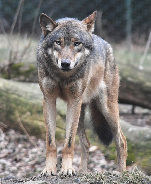
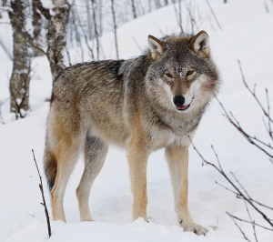

Lupo Grigio
della famiglia canis lupusIl lupo grigio (Canis lupus Linnaeus, 1758), detto anche lupo comune o semplicemente lupo, è un canide lupino, presente nelle zone remote del Nord America e dell'Eurasia. È il più grande della sua famiglia, con un peso medio di 43–45 kg per i maschi e 36-38,5 kg per le femmine. Oltre che per le dimensioni, il lupo grigio si distingue dagli altri membri del genere Canis per il suo muso e le orecchie meno appuntite. Il suo mantello invernale è lungo e folto, di colore prevalentemente grigio variegato. Alcuni esemplari presentano anche mantelli bianchi, rossi, bruni o neri.
È un sopravvissuto all'era glaciale, originario del tardo Pleistocene, circa 300.000 anni fa. Sequenziamento e studi del DNA.
Il peso e le dimensioni dei lupi variano notevolmente in tutto il mondo, tendenzialmente aumentare proporzionalmente con la latitudine, come previsto dalla teoria di Christian Bergmann In generale, l'altezza, misurata dalle spalle, varia da 60 a 95 centimetri.
Il peso varia geograficamente. In media, i lupi europei pesano 38,5 kg; Lupi nordamericani, 36 kg; i lupi indiani e arabi, 25 kg. Sebbene rari, sono stati trovati lupi di peso superiore a 77 kg Alaska, Canada, e l'ex Unione Sovietica.
Viva Il Lupo: Tra Leggenda e Realta CONOSCERLO PER PRTEGGERLO
- Origini: 500/300 mille anni fa
- Classe: Mammalia
- Età Media: 13 anni
- Maschio adulto: 80 kg
- Femmina adulta: 55 kg
- Specie: C. lupus
É um sobrevivente da Era do Gelo, originário do Pleistoceno Superior, cerca de 300 mil anos atrás.[2] O sequenciamento de DNA e estudos genéticos reafirmam que o lobo cinzento é ancestral do cão doméstico.
É um sobrevivente da Era do Gelo, originário do Pleistoceno Superior, cerca de 300 mil anos atrás.[2] O sequenciamento de DNA e estudos genéticos reafirmam que o lobo cinzento é ancestral do cão doméstico.